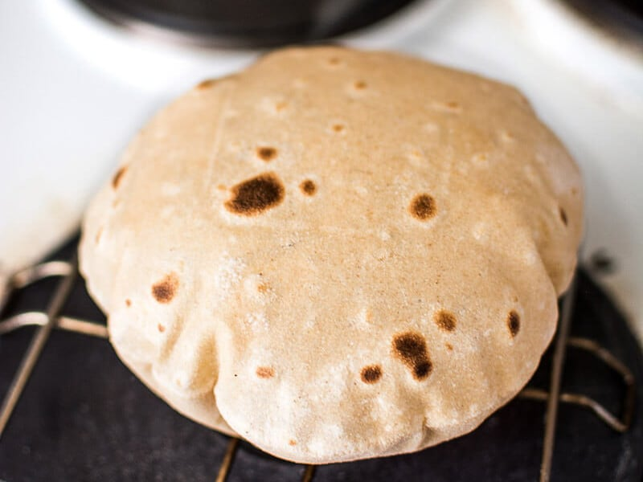

Go to all recipes
Roti

Roti It is a famous dish of
India. People love to eat Roti because it is
tasty as well as healthy if made correctly. Beside that is doesn't require
much ingredients to enjoy this dish
Required Ingredients
- Wheat Flour
- Water
- Salt
- Little bit of ghee
Steps to make
- Take some wheat flour and make dough adding some salt to it
- Not take some dough and flatten it
- Now heat a pan
-
Now bake it at mid flame when it turns brownish take it off the pan and
let it inflate on gas stove
- Now take half or less tablespoon of ghee and spread on one side
- Tda! Roti is ready now enjoy with any vegetable
-
Bonus Tip: when it is inflating like a balloon never try to penetrate
because very hot stream is in it and can cause serious burns 😊